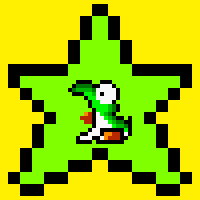

| Super Mario Maker |
|---|
| Level showcase |
| Tips, Tricks and Glitches |
| Hacking info |
| Fan Games |
|---|
| Gatete's Engine |
| Super Mario ReMaker |
| Super Mario Unimaker |
| Other fangames |
| Super Forum Maker |
|---|
| Latest News |
| General Chat |
| General Modding |
| Mario Making Mods Talk |
| SMB3 Underwater Theme |
|---|
| The Hall of Fame |
| Forgotten Depths |
|
9 threads and 48 posts total
0 posts today, 0 last hour, and 0 for the past week 0 active threads today, 0 last hour, and 0 for the past week
867 registered users, 0 active (0%)
Newest user: mkahfi29 |
Trouble in the Desert | Super Mario Unimaker Custom Stage — Posted by  NightYoshi370 on 05-10-19, 11:12 pm
NightYoshi370 on 05-10-19, 11:12 pm
NightYoshi370 on 05-10-19, 11:12 pm
| guide in progress? |
|---|
| help |
| 0 replies 81 views |
| Course Maker Modification smm2 |
|---|
|
Posted on 10-06-19, 05:56 pm by  URReadingMyUsername
Last Post: URReadingMyUsername on 10-06-19, 07:17 pm » Thread ID: 140985771 |
| 2 replies 250 views |
| Needed textures mario maker 2texturesneeded mod switch |
|---|
| I need textures |
| 4 replies 460 views |
 .NET
.NET| How i can change the bg in NSMBWU? | |
|---|---|
| NSMBU Help | |
![[poll]](../img/poll.png) |
Posted on 04-03-18, 07:05 pm by
 WillyMaker WillyMaker Last Post: WillyMaker on 05-06-19, 05:28 pm »Thread ID: 570 |
| 9 replies 1911 views | |
| 3DS NSMBU Background editing? |
|---|
|
Posted on 04-22-19, 11:36 am by IronFoxGaming
Last Post: IronFoxGaming on 04-22-19, 11:25 pm » Thread ID: 74489728 |
| 4 replies 439 views |
| Timer Edit ? |
|---|
| Is it possible to edit the timer properties ? |
|
Posted on 04-07-18, 06:00 pm by TheNawab
Last Post:  falling upwards on 03-01-19, 09:03 pm » falling upwards on 03-01-19, 09:03 pm »Thread ID: 575 |
| 7 replies 1326 views |
| Can Someone Send Me A Dumped Game File Of Mario Maker 3DS? |
|---|
|
Posted on 09-17-18, 10:38 pm by A Kramer Randomness
Last Post:  Buntendo on 09-17-18, 10:51 pm » Buntendo on 09-17-18, 10:51 pm »Thread ID: 764 |
| 3 replies 869 views |
| Importing a NSMBU Mario model impossible |
|---|
| I don't know how to do that. |
|
Posted on 08-28-18, 02:19 pm by
 eros744 eros744 Last Post: NightYoshi370 on 09-16-18, 07:54 pm »Thread ID: 725 |
| 6 replies 1706 views |
| SMM Wii U Custom edit music error |
|---|
|
Posted on 09-01-18, 10:53 pm by
WillyMaker Last Post: WillyMaker on 09-02-18, 10:17 pm »Thread ID: 738 |
| 4 replies 879 views |
Go to forum: